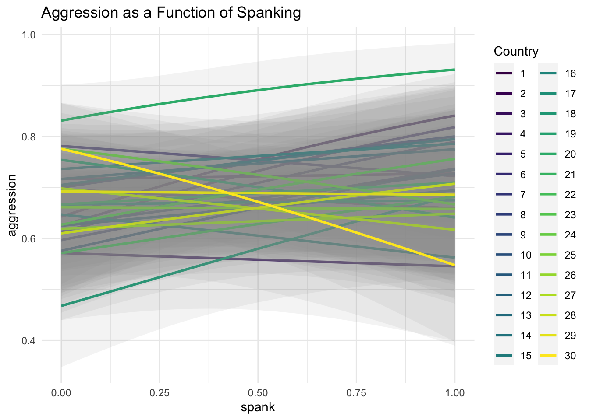

This appendix details the process of creating the simulated MICS data that is employed in the examples on this website.
MICS data are freely available, but usage of MICS requires completing a user agreement, and registering for a user account, on the MICS website, and thus MICS data should not be shared openly on a public website.
This Appendix is highly technical. It is not necessary to understand this Appendix to benefit from the rest of this website. However, the details of creating this simulated data may be of interest to some users.
A.1 Call Relevant Libraries
We need to call a number of relevant R libraries to simulate the data.
Because simulation is a random process, we set a random seed so that the simulation produces the same data set each time it is run.
We are going to simulate data with 30 countries, and 100 individuals per country.
Show the code
set.seed(1234) # random seedN_countries <-30# number of countriesN <-100# sample size / country
A.3 Simulate Data Based on MICS
This is multilevel data where individuals are nested, or clustered, inside countries. Excellent technical and pedagogical discussions of multilevel models can be found in Raudenbush & Bryk (2002), Singer & Willett (2003), Rabe-Hesketh & Skrondal (2022), Luke (2004), and Kreft & de Leeuw (1998).
A.3.1 Level 2
Simulating the second level of the data is relatively easy. We simply need to provide the number of countries, and then generate random effects for each country. Random effects are discussed in the above references, but essentially represent country level differences in the data.
We also create GII, a gender inequality index variable, since this is a country level, or Level 2 variable.
Show the code
country <-seq(1:N_countries) # sequence 1 to 30GII <-rbinom(N_countries, 100, .25) # gender inequality indexu0 <-rnorm(N_countries, 0, .25) # random interceptu1 <-rnorm(N_countries, 0, .05) # random sloperandomeffects <-data.frame(country, GII, u0, u1) # dataframe of random effects
A.3.2 Level 1
Simulating the Level 1 data is more complex.
We uncount the data by 100 to create 100 observations for each country. We then create an id number.
We create randomly simulated parental discipline variables with proportions similar to those in MICS.
Lastly, we need to create the dependent variable. Because this is a dichotomous outcome, the process is somewhat complex. We need to craete a linear combination z, using regression weights derived from MICS. We then calculate predicted probabilities, and lastly generate a dichotomous aggression outcome from those probabilities.
We add variable labels to the data which will help us to understand the data as we analyze it.
Show the code
var_label(MICSsimulated$id) <-"id"var_label(MICSsimulated$country) <-"country"var_label(MICSsimulated$GII) <-"gender inequality index"var_label(MICSsimulated$cd1) <-"spank"var_label(MICSsimulated$cd2) <-"beat"var_label(MICSsimulated$cd3) <-"shout"var_label(MICSsimulated$cd4) <-"explain"var_label(MICSsimulated$aggression) <-"aggression"pander::pander(labelled::look_for(MICSsimulated)[1:5]) # list out variable labels
pos
variable
label
col_type
missing
1
id
id
int
0
2
country
country
int
0
3
GII
gender inequality index
int
0
4
cd1
spank
int
0
5
cd2
beat
int
0
6
cd3
shout
int
0
7
cd4
explain
int
0
8
aggression
aggression
int
0
A.4 Explore The Simulated Data With A Graph
Exploring the simulated data with a graph helps us to ensure that we have simulated plausible data.
Show the code
ggplot(MICSsimulated,aes(x = cd1, # x is spankingy = aggression, # y is aggressioncolor =factor(country))) +# color is countrygeom_smooth(method ="glm", # glm smoothermethod.args =list(family ="binomial"),alpha = .1) +# transparency for CI'slabs(title ="Aggression as a Function of Spanking",x ="spank",y ="aggression") +scale_color_viridis_d(name ="Country") +# nice colorstheme_minimal()

A.5 Explore The Simulated Data With A Logistic Regression
Similarly, exploring the data with a logistic regression confirms that we have created plausible data.
Rabe-Hesketh, S., & Skrondal, A. (2022). Multilevel and longitudinal modeling using Stata. In Stata Press (4th ed.). Stata Press.
Raudenbush, S. W., & Bryk, A. S. (2002). Hierarchical linear models: Applications and data analysis methods (pp. xxiv, 485 p.). Sage Publications.
Singer, J. D., & Willett, J. B. (2003). Applied longitudinal data analysis : Modeling change and event occurrence. In Applied longitudinal data analysis : modeling change and event occurrence. Oxford University Press.